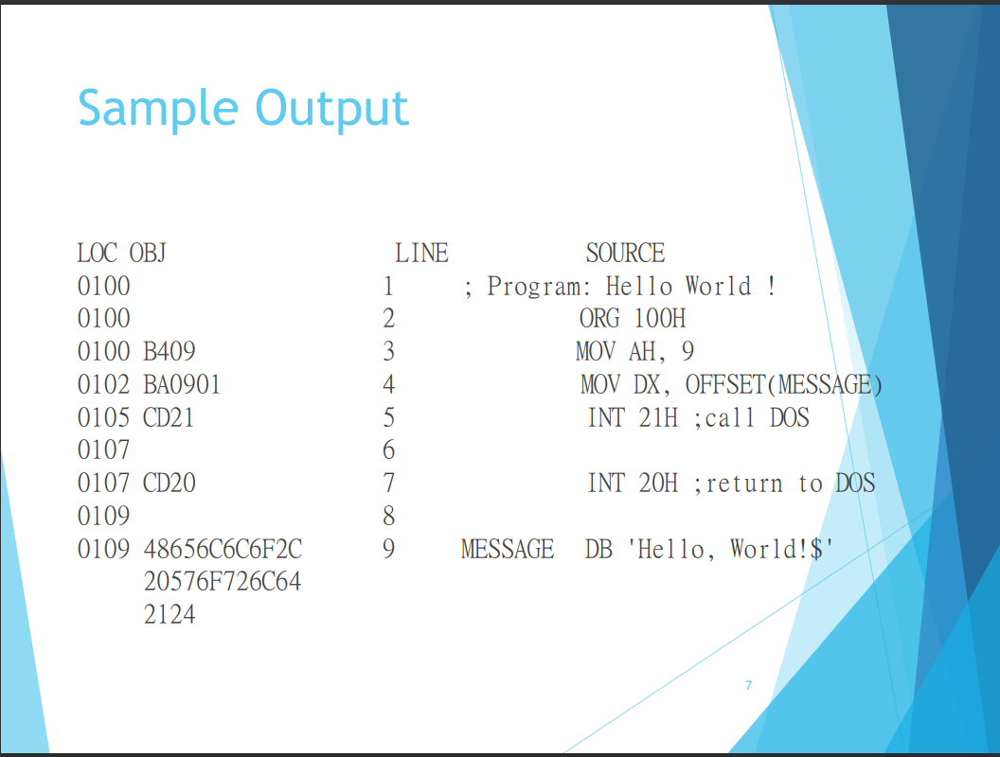
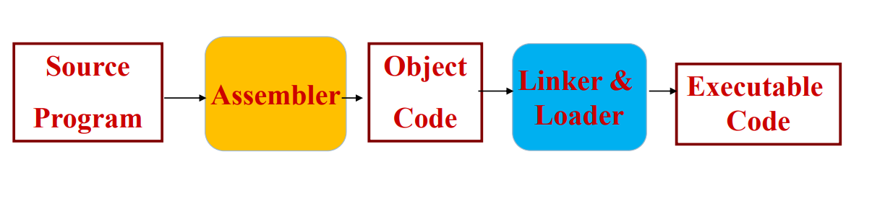

SICxe-assembler
如下圖說明，右邊是sic程式碼(這份project的input)，左邊是machinecode(output)

組合語言是把「機器指令」(或稱「機器碼」)表示成 「文字指令」所構成的程式語言，使用組合語言所撰寫的 程式需經Assembler(組譯器)將文字指令編譯成機器碼，
執行時的順序:
組合語言-----組譯器 ------機械碼
MOV AH 09 ---------------> 00010010
